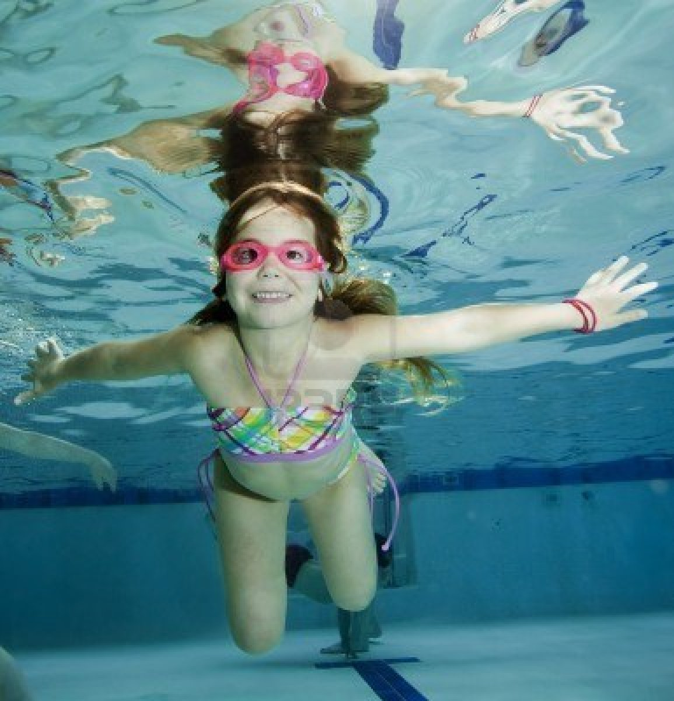

Just Keep Swimming!
The Regions Newest Swimming Pool!
Welcome to the website for Just Keep Swimming, the regions newest family friendly swimming pool. Built in 2013, it holds the best type of swimming experience the city has to offer. Nowhere else can you find a better Atmosphere, than here!
Whether you are looking to spend time with family, get fit or just need a little swim to cheer you up, Just Keep Swimming is open to people of all ages! Affordable and easy to access, Just Keep Swimming is the pool for you.
Just Keep Swimming is the pool you want to go to over and over again. Inspired by Disney Pixar's, Finding Nemo, Just Keep Swimming holds a world of aquatic possibilities. We have a wave pool, lane pool (wave pool converts to lane pool), 30 person hot tub and sauna! Also, we have fully equiped change rooms with washrooms, showers and changing stations. Don't forget to bring a lock! And if you ever get a little hungry after a great swim, come meet us at the snack bar! YUM!
Our low prices and accomadating schedule makes Just Keep Swimming the best pool. Check out our Prices and Schedule pages to find the right price and time for you. Our new site is also available for viewing on phones and tablets!
Our Staff are dedicated to making sure your time here is great. We have fully certified Life Guards who are well trained for safe swimming observation during public pool hours and also Swimming Lessons. So come on down to Just Keep Swimming and show us your swimming potential!